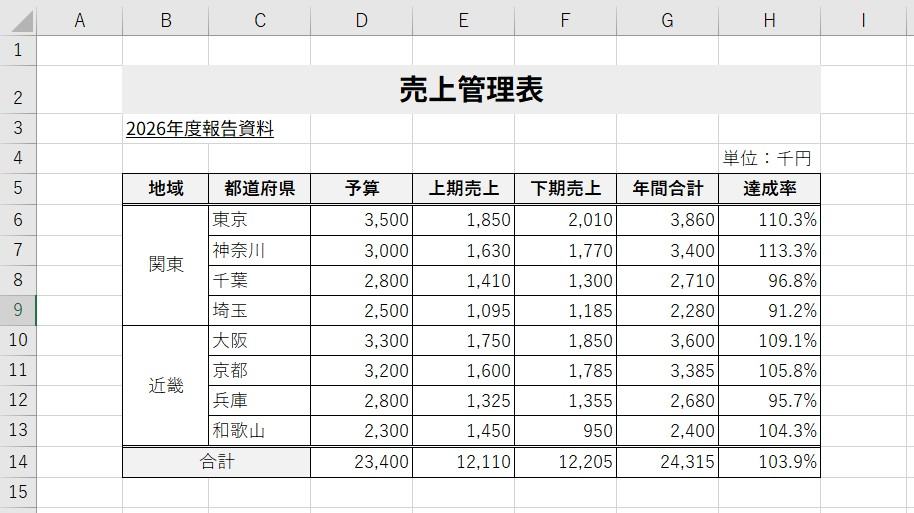
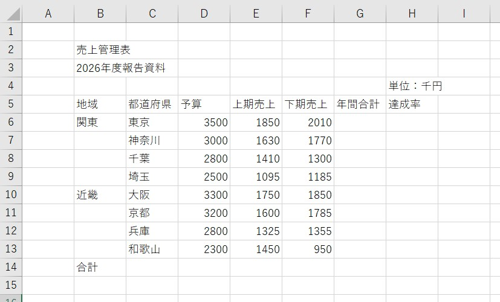
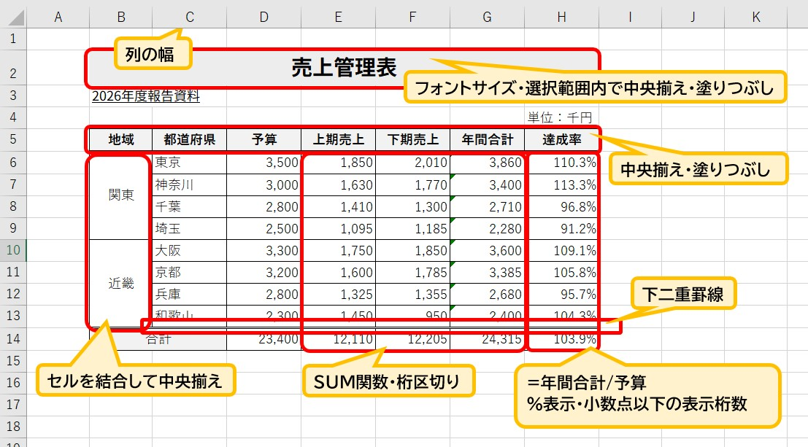

Excelで作る「売上管理表」の整え方
～計算ミスを防ぎ、誰が見ても分かる表にする～
Excelで仕事をしていると、売上や予算などの数字を表にまとめる機会があります。でも、数字を入力して並べるだけでは、仕事で使いやすい表にはなりません。
今回は、実際の「売上管理表」を作りながら、実務で役立つExcelの使い方を練習しましょう。
・Excelに正確な「計算」をさせる仕組み作り
・SUM関数を効率よく使うための範囲選択術
・達成率の求め方とパーセント表示
・後々の編集を楽にする「セル結合」を使わない配置
1．まずは完成した表を見てみよう
最初に細かい操作を覚える必要はありません。まずは「最終的にどんな表を作るのか」というゴールを見てみましょう。

▲完成イメージ：計算と装飾が整った表です
今回の表には「地域・都道府県・予算・上期売上・下期売上・年間合計・達成率」が入っています。最大のポイントは、単に数字を打ち込むのではなく、Excelに計算をさせていることです。
たとえば東京なら、売上の合計（3,860）や予算に対する達成率（110.3％）は、すべてExcelが自動で算出しています。このような「仕組みのある表」に仕上げていきます。
2．準備：まずはデータを入力する
表を作るときは、いきなり色を付けたり罫線を引いたりしません。まずは、タイピングに集中して表の「中身（データ）」を用意します。

▲準備したデータ：まずは各セルに正しく入力します
数字は必ず「3500」のように、数字だけを入力しましょう。「3,500円」のように文字を混ぜてしまうと、Excelが計算できなくなってしまいます。カンマや単位といった表示は、最後に見た目を整える際に一括で設定するのが効率的です。
3．今回のポイントを先に確認
表を完成させるために、特に意識してほしい実務上のポイントは4つです。
- 年間合計は計算式で求める：上期売上 ＋ 下期売上 をセル番地で指定します。
- 合計行はSUM関数を使う：電卓は使わず、範囲を選んでオートSUMを使います。
- 達成率を計算する：年間合計 ÷ 予算 で割合を求めます。
- タイトルを安易に結合しない：データの扱いやすさを守るため「選択範囲内で中央」を使います。
4．年間合計は「上期＋下期」
東京の場合、1,850 ＋ 2,010 ＝ 3,860 です。ここで「3860」と直接キーボードで打ってはいけません。年間合計のセルに「＝（上期のセル）＋（下期のセル）」という数式を設定しましょう。
こうしておけば、後から売上の数字が変更されても、合計金額が自動的に更新されます。Excelでは、「答えを打つ」のではなく「答えを出す仕組みを作る」と考えます。
5．ここが重要！合計は「まとめて選択」できる
表の下にある「合計」を出す際、1列ずつSUM関数を入れていませんか？ Excelではもっとスマートな方法があります。

▲まとめてSUMやその他の機能を使用した解説：SUMは範囲選択が時短のコツ
今回の表では、合計を出したい範囲（データから空の合計行まで）を**まとめて選択**し、**Σ（オートSUM）**ボタンを押します。すると、上期・下期・年間の3列すべての合計が一瞬で算出されます。
「1列ずつ」から「範囲でまとめて」へ。この視点を持つだけで、実務のスピードは上がります。
6．達成率を求める
達成率は「目標（予算）に対して、どれだけ結果を出せたか」を表します。計算方法は 達成率 ＝ 年間合計 ÷ 予算 です。
東京なら 3,860 ÷ 3,500 ＝ 1.1028... となります。これをExcelの機能でパーセント表示（110.3％）に変換します。数字が100%を超えていれば予算達成、下回っていれば未達成、と一目で判断できるようになります。
7．数字の表示を整える
計算ができたら、見た目を整えます。実務で最も大切なのは「読み間違いをさせないこと」です。
- 桁区切り（カンマ）：3500 ではなく「3,500」と表示します。
- 小数点以下の調整：達成率は「110.3%」のように、四捨五入して桁を揃えます。
大切なのは、**セルの「中身」は計算できる数字のまま、見やすい仕様に変える**というExcel特有の考え方です。
8．タイトルはセル結合しなくても中央にできる
表のタイトル「売上管理表」を中央に配置する際、ついつい「セルを結合して中央揃え」を使いがちです。しかし、安易なセル結合は、後の並べ替えやコピーを困難にする原因になります。
実務では、セルの書式設定にある**「選択範囲内で中央」**という機能を使うのがおすすめです。見た目は中央に揃えつつ、セルの構造はバラバラのまま保てるため、非常に「壊れにくい」表になります。
9．罫線や色を付けて「表」を完成させる
最後に仕上げの装飾を行います。目的は「派手にすること」ではなく、情報の区切りを明確にすることです。
- 見出しの塗りつぶし：項目名に薄い色を付け、データと区別します。
- 格子の罫線：表全体に細い線を引き、合計行の上には二重線を引いて強調します。
- 配置の調整：文字は中央、数字は右、と揃えることで視線の動きが安定します。
まとめ｜Excelは「計算してくれる表」にする
今回の売上管理表を通じて、以下の4点を指に馴染ませましょう。
- 数字は「数値」として入力する：単位は後から設定するのが鉄則。
- 合計は範囲選択して一気に算出：SUM関数をまとめて設定する時短術。
- 仕組みを作る意識：数値を変えれば合計や達成率が自動で変わる表にする。
- セル結合は慎重に：データの再利用性を考えた配置を選ぶ。
Excelは数字を入力して終わりではありません。「人が計算する」から「Excelに計算させる」。この考え方を身につけることが、仕事で信頼されるExcelスキルへの第一歩です。